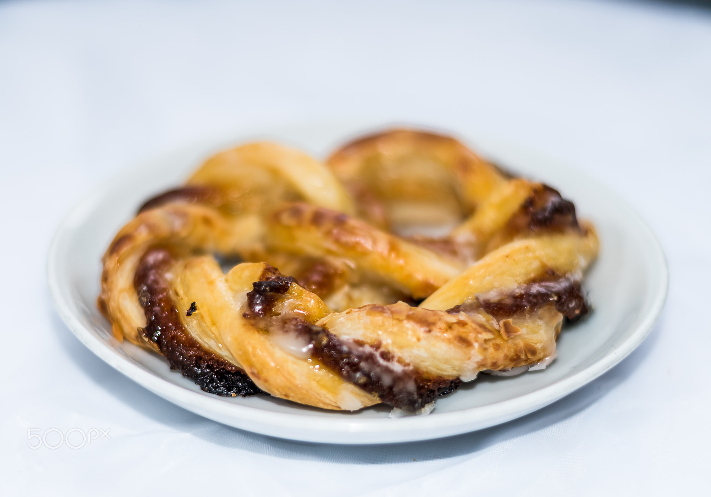
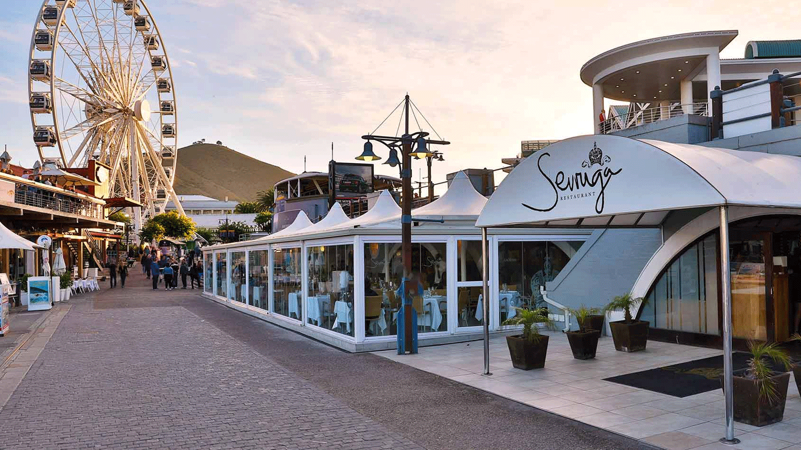

Food Photography.
Food photography is the art of creating appetizing images using techniques such as lighting, arrangement, and background to be used commercially by the photographer. Visual appeal of the food alone can influence attraction to food photographers and bloggers. The degree to which a food blogger relies on food photography varies from blog to blog. Food photography can help construct the narrative of a food blog and can be used to attract an audience.

Food and Travel
Foodie Fanatix is a food blog where we get to review all kinds of foods from different restaurants all around the globe. It's all love for food (Drinks are also supported), I mean what is food withou a drink. Food and travel blogging involves research, shooting, editing, investing & scheduling..
